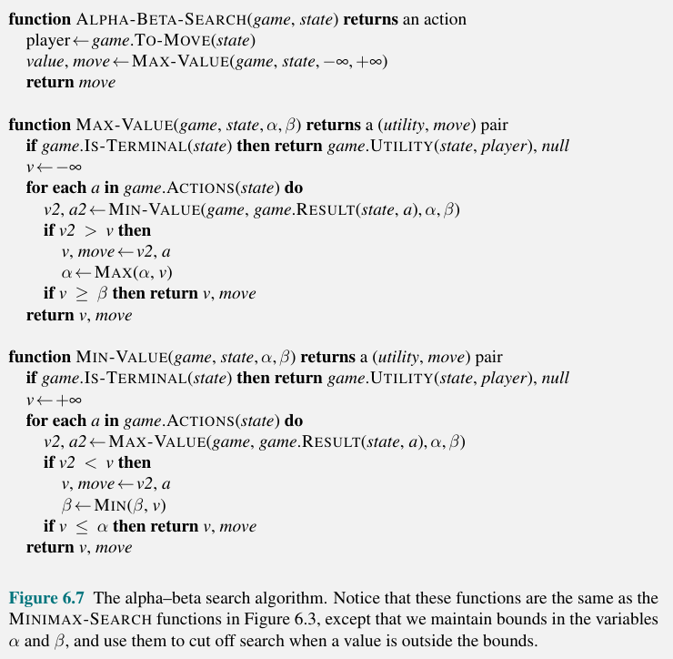

This section discusses competitive environments, where two or more agents have conflicting goals. These are known as adversarial search problems.
This chapter starts by generalizing the $\text{And-OR}$ search in chapter 4 to create the minimax search algorithm. We discuss pruning, which makes the search more efficient by ignoring portions of the search tree that we know do not contain the optimal move.
Then the following sections will discuss these set of topics:
For games, we use the term move as a synonym for "action" and position as a synonym for "state".
These games commonly studied in the field of AI are known as deterministic, perfect information, zero-sum games. Perfect information because the environment is fully observable, and zero-sum means that an action that is good for one player is equally bad for the other player.
Typically we can call out two players $\text{MAX}$ and $\text{MIN}$. A game between these two can be formed using the following elements:
Like chapter 3, we can define the problem in a state space graph. The edges are moves and the vertices are states. We define the game tree as a search tree that follows every sequence of moves until the "terminal state". The game tree can be infinite if the state space is unbounded or the game allows for infinitely repeating positions.
Figure 1 below shows a branch of the game tree for tic-tac-toe. In the beginning, $\text{MAX}$ has $9$ possible moves. Play alternates between the two agents until a lead node is reached that corresponds to terminal states (one player wins or all squares are filled). The number below each lead node indicates the value of the terminal state from the point of view of the player $\text{MAX}$; higher values are good for $\text{MAX}$ and bad for $\text{MIN}$.
Figure 1. Portion of a tic-tac-toe game tree that leads to terminal states.
For tic-tac-toe, there are fewer than $9! = 362,880$ terminal nodes because a game can end in less than 9 moves. There are actually $255,168$ possible games in tic-tac-toe from this stack overflow answer.
In our game tree search, our player always wants to find a sequence of actions that lead to a win. So, our $\text{MAX}$ player wants to find the optimal strategy that will respond appropriately to each of $\text{MIN}$'s possible moves. For games that have a binary outcome, one can use $\text{And-OR}$ search to generate the plan to win. For games with multiple outcome scores, we need a more general algorithm. Enter minimax search.
Given a game tree, the optimal strategy can be determined by finding the minimax value of each state in the game tree, denoted $\text{Minimax}(s)$. When it is $\text{MAX}$'s turn, it prefers to move to a state of maximum value, and when it's $\text{MIN}$'s turn, it prefers to move to a state of minimum value. This comes out to the following:
$$ \displaystyle \text{Minimax}(s) = \begin{cases} \text{Utility}(s, \text{MAX}) & \text{if Is-Terminal}(s) \\ \text{max}_{a \in Actions(s)} \text{Minimax}(\text{Result}(s, a)) & \text{if To-Move}(s) = \text{MAX} \\ \text{min}_{a \in Actions(s)} \text{Minimax}(\text{Result}(s, a)) & \text{if To-Move}(s) = \text{MAX} \end{cases} $$
Take the example below, in this case we have $\text{MAX}$ as the root node. It has successors B, C, and D, which also each have 3 more successors. Node B is trying to find the minimum value successor, so its minimax value is $3$. Similarly, nodes C and D have a minimax value of $2$. Node A wants to maximize its value, so its minimax value is $3$ (Node B).
Figure 2. An example game tree with $\text{MAX}$ as the root node.
Now that we can compute the minimax value for a single state using $\text{Minimax}(s)$, we want to be able to compute the best move for $\text{MAX}$ by trying all the actions in the game tree. The recursive algorithm for this is shown in Figure 3:
Figure 3. The Minimax Algorithm for choosing the state with the highest $\text{Minimax}$ value.
The minimax algorithm performs a complete depth-first exploration of the game tree. We know from chapter 3 that the time complexity of depth-first search is $O(b^m)$ and the space complexity is $O(bm)$ where $m$ is the maximum depth of the tree and $b$ is the number of legal moves at each state.
An optimization to the minimax algorithm where we choose not to "prune" nodes we know will lead to a bad state for our agent is known as Alpha-Beta Pruning.
$\alpha$ is the value of the best choice we have found so far at any choise point along the path for $\text{MAX}$. $\beta$ is the value of the best choice we have found so far at any choise point along the path for $\text{MIN}$

Figure 4. Pseudocode for the alpha-beta pruning algorithm - An extension of the minimax algorithm.